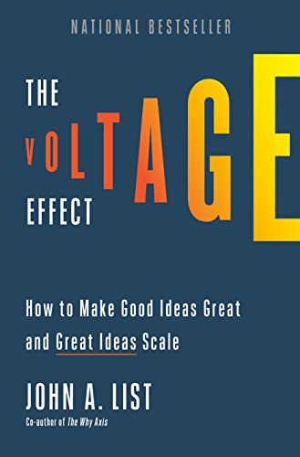

The Voltage Effect, by List
Sunday February 26, 2023
The subtitle is "How to make good ideas great and great ideas scale," but a lot of it is about how to avoid bad ideas. The "Five Vital Signs" are really five kinds of problems:
- Reliability: Thinking a test is promising when it's not: "Dupers and false positives"
- Validity of a test sample: "Know your audience" or "overestimating how big a slice of the pie your idea can capture" or "representativeness of population"
- Scalability of the treatment: "situational validity" or "unscalable ingredients" and "program drift" and "noncompliance"
- Unintended consequences: "Spillovers"
- Just too expensive: "The cost trap"
Problems 4 and 5 could be special cases of 3.
Then there are four chapters that have some more positive recommendations:
- "using behavioral-economic incentives"
- "exploiting easily missed opportunities on the margins of your operation"
- "knowing when to quit in the short term in order to win in the long term"
- "culture that is sustainable at scale"
It's a pop economics book. Marginal revolution, comparative advantage, anecdotes from academia and Uber and Lyft and government. It's not awful, but I didn't feel like it delivered quite what it promised.

"Through my research and time working with policymakers, my personal credo had become that the only ideas worth pursuing are the ones with the potential to make a significant impact on human lives." (page 6)
"... the one thing all great ideas have in common is that they are not guaranteed to succeed. ... the path from early promise to widespread impact requires one thing and one thing only: scalability—the capacity to grow and expand in a robust and sustainable way." (page 9)
Is this a contradiction? Great ideas may or may not be scalable? But wouldn't a good idea be better if it was scalable?
Bad scalable ideas seem clearly allowed.
"(a charity will attract more donations in the short run and long run if they attract initial donors by promising to never bother them again rather than with the traditional strategy of constant follow-ups)" (page 10)
The reference is Once and Done and I wonder whether it's been replicated. The effect they find is strong, but their experiment is with Smile Train, whose mailers include prominent photos of children with cleft palates. The authors offered mechanism includes that "a solicitation by a charity imposes a cost on the recipient," and in the case of Smile Train that cost may be particularly high and not due only to social pressure.
"The book calls upon policy-makers to move their attention from evidence-based policy to policy-based evidence." (page 15)
List seems to want to make this his catch-phrase. It's repeated on (at least) pages 15, 63, 87, and 233. I don't think it works as a slogan because, for one, it isn't terribly clear. I think he's advocating for program evaluation?
"conjoint analysis" (page 53)
"Logan believed that the extra perks combined with the 15% discount on rides (rather than the 7.5 percent discount we'd initially calculated) would motivate more JoGoods to join." (page 53)
This seems like an interesting story of data vs. executive decision-making, but List doesn't elaborate further.
"backward induction" (page 87)
"The spillover effect falls under a larger umbrella category popularly known as the law of unintended consequences." (page 91)
"Based on my experience with the baseball fundraising, one would expect that making salaries transparent could drive resentful demoralization if people saw peers making more. But that is not the full story." (page 99)
He found that when he randomly paid some people less (for an identical job) and they found out by talking to others, those paid less worked less hard.
The more to the story he references is a study where when people learned their managers made more than they thought, they worked harder.